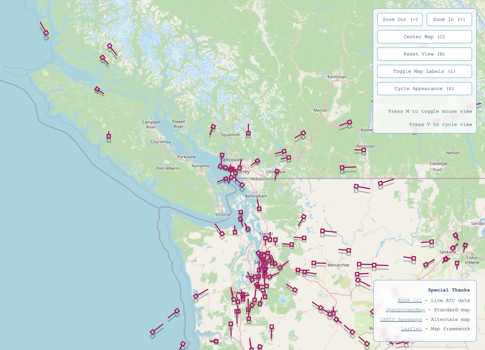
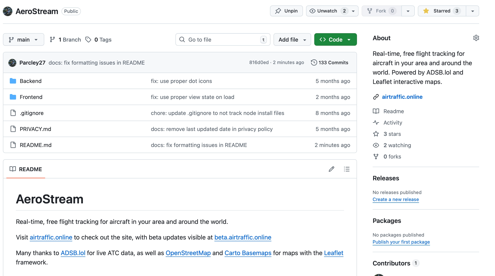
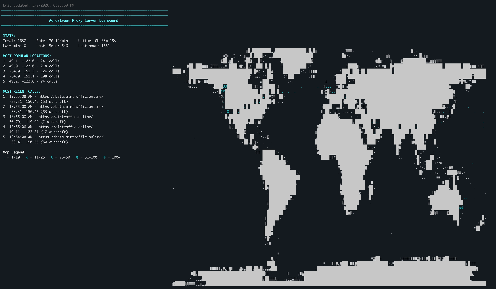

AeroStream
Worldwide Open Source & Realtime Aircraft Tracking
AeroStream is a publicly deployed full stack web app that renders live aircraft positions across the globe in real time. It gathers flight telemetry (ADS-B data) from the ADSB.lol public api — which aggregates ADS-B radio signals from a global network of ground receivers and relays. Using this data, it can then plot each aircraft on an interactive map, displaying information about callsign, altitude, speed, heading, and more. The site runs continuously on a self-hosted Ubuntu Linux server with over 99.9% uptime (last month average), and is accessible to anyone at airtraffic.online.
Implementation
Frontend Architecture
The frontend (user side) is designed in vanilla JavaScript, and currently organized into four purpose-built ES modules: a session manager that handles website startup and idle timeouts, a UI manager that deals with appearance settings and label rendering, a keyboard handler that manages keyboard shortcuts and inputs, and a map controller that owns location data and the Leaflet.js map states. As the project grew, the separation was made to better match professional standards in web design.
Visually, the map can dynamically adjust the refresh rate of its data between 0.5 and 7.5 seconds based on the displayed zoom level, to better support processing times for larger sets of aircraft. This also reduces unnecessary network load when the user is zoomed out. The map interface supports three theme modes, an accessibility/display enhanced mode, labeled or textless options, and more, with each managed through an array-indexed state pattern for robustness. With additional site wide settings, over 200 custom visual permutations are supported.
Backend & Proxy Tools
Because modern browsers enforce the same-origin policy, the frontend cannot directly query external APIs from a different domain (specifically, this blocks ADSB.lol directly). To solve this problem, I built a custom Node.js proxy server built on Express, which runs on a public facing port of my home server and forwards requests to ADSB.lol with the correct CORS headers. On the server machine itself, the proxy is enabled as a systemd service under a dedicated unprivileged system user, meaning it restarts automatically on failure and survives server reboots without any manual intervention. To access this, the website goes to its own subdomain — api.airtraffic.online — and is reverse proxied through nginx to reach it, meaning requests stay more secure once they reach the server.
Server Infrastructure
The entire stack runs on a repurposed desktop machine (i5-3000 series, 12 GB DDR3) running headless on Ubuntu Server. This is a command line OS, and I administer it remotely over key-only SSH, as well as a custom secured terminal on my personal site. Further security measures include a disabled root login, and active fail2ban configs that monitor intrusion attempts.
On the server, nginx acts as the reverse proxy and static file provider, and routes all the traffic across the multiple subdomains, including a beta environment for testing (beta.airtraffic.online), the api endpoint, a git mirror for access when standard repository access is blocked on other machines' networks, and more. TLS certificates from Let's Encrypt are issued and auto-renewed using certbot, and deployment is handled by shell scripts that pull from GitHub into the beta environment, then promote to production later once I've finished testing. This was done to replicate, in part, a miniature version of the staged rollout pipelines used in the industry.
Additional Information
Exceeding Typical Course Requirements
High school programming courses typically only reach to local execution with single program designs. Conversely, AeroStream spans the full delivery chain; from the modular yet unified frontend design, to the custom API endpoint, the custom backend proxy server, and the production ready Linux distro and server hardware, each layer builds on top of the last to provide the full deployment tech stack. Every part took days of research and problem solving. CORS mechanics, nginx location-block ordering, systemd unit file configs, and git promotion scripts are not topics covered in any high school course, yet they are all present to work together in a live, public system.
Codebase
The complete README file for this project can be accessed from the AeroStream repository. Specifically, it is available on GitHub here: github.com/Parcley27/AeroStream. The README contains more information about the software implementation, how to use the site, and how the site itself was set up for public access. The code itself is documented where appropriate, and largely written to help people with pull requests and/or forks.
Screenshots



